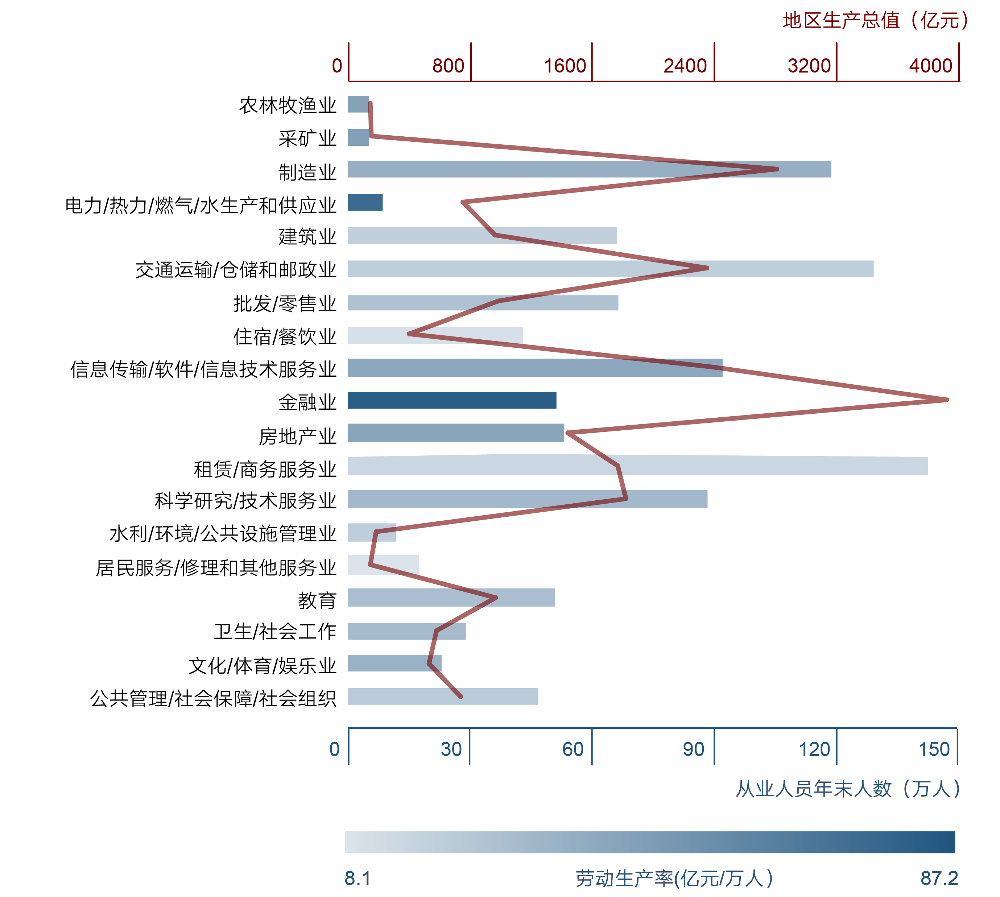
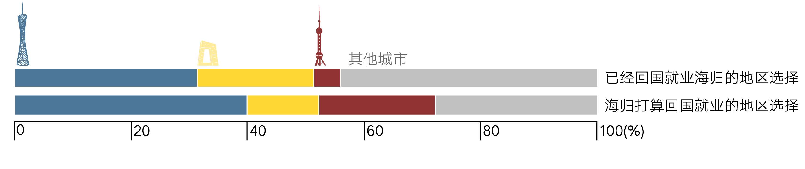

“北京户籍就像是一个沾满了糖浆的蜜棒，上面附着着大大小小各种各样的社会福利。”北京社会科学院社会学所副研究员李晓壮用这样一个形象的比喻，一语道破如今人们为之踌躇万千的原因。因为一纸京市户籍，有人留下了，也有人离开了。这千千万万的走与留，之于北京的现在和未来会有着如何的影响？
之所以历次的人口红线都在不足规划时间的三分之一内被突破，其中有一个重要的原因：急速的城镇化效应。改革开放以来，作为首都的北京集政治中心、文化中心、经济金融管理中心、信息中心、交通中心、国际交往中心、旅游中心和高新技术制造业中心，八大中心为一体，汇集社会方方面面的财力、物力，吸引着远近庞大的劳动人口，成就了多中心为一体的国际都市的同时，也让北京有着不可承受之重。
城镇化的快速发展可以从城市就业结构和阶层结构几十年间的变化中管中窥豹：
商服阶层主要由批发与零售、租赁和商务服务业的从业人员构成，根据最新数据，2015年其行业人员数量占据所有产业人员数量的近26%，但他们所创造的地区生产总值只占北京当年GDP总产值的17.9%。
无论是批发与零售业，还是租赁与商务服务业，都是和人民日常生活息息相关的重要行业，但与此同时其落后的劳动生产率和低质量的就业说明需要其本身对就业质量提高的需要和对相关人才的迫切需求。与此同时，城市对劳动生产率较高的金融业、信息技术、软件行业还有着巨大的需求，这些都需要更多高端人才的流入来为城市增添新的活力。
上世纪80年代以来，外来人口逐渐成为北京人口增长的主力，从最初的十几万人，上升到如今的八百多万，成为北京发展活力的重要来源。然而，日渐逼近的2300万人口红线倒逼北京施行愈加严格的户籍准入政策，户籍不再只是一种归属，更多代表着未来生活的种种福利政策，关乎年轻人成家立业的基本需求，主要表现在买房权限、子女教育、退休养老等问题上。同时，政府利用户籍政策来吸收人才的意图也可以从北京积分落户政策中窥见一斑，总览所有积分项目，最大的分项落在了学位学历上，同时对高新企业创业创新也给予很大鼓励。而同时不得不认识到的一点问题是，在人才通过积分落户北京的同时，有更多潜在人才被无形的“户籍之墙”拒之门外。
而同时，与上海、广州等一线城市相比，北京的人才吸引力也呈现日渐薄弱之势。根据中国与全球化研究中心2011年的调查，在已经回国的海归就业人群的区域选择中，北京明显落后于广东；在打算就业的海归人群中，北京也位居广东和上海之后。
积分落户在承担其控制人口规模的历史使命的同时，也立意于调节北京人口就业结构，提高就业质量，然而需要同时反观其效的是，它控制得了体制内，是否能作用于体制外？在潜在人才被户籍门槛阻挡在外之时，是否限制得了流动的“打工者”。
“作为一国之都，北京有着其难言之隐，必须先求稳定，然后图发展。”过于膨胀的人口需要政府有相应的财力提供社会福利，也需要更多地消耗有限的自然资源。因而，北京严控人口的基准点不能松。面对新华网记者的采访，北京社会科学院的副研究员鄢圣文如是说道，“为了更好地为在京常住外来人口提供社会福利，在提高户籍准入门槛的基础上，也有很多政策为其提供弹性，比如‘五证’齐全，子女也可以在京入学；在北京连续交满10年可以在北京办理退休等等。”